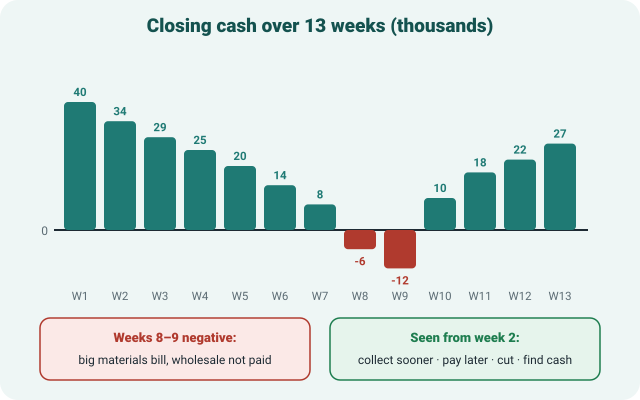

K5 · Planning and keeping work commitments › Level 3 Secure
The numbers that keep you alive: cash flow, break-even, margin
This lesson completes Sheet 4: 13-week cash flow and three numbers. Print template. It teaches how to read numbers to make decisions. It is not accounting or tax advice. Amounts are in a generic currency unit, so use your own. Family finances are covered on daynentang.com (in Vietnamese).
1. Objectives
- Build a 13-week cash flow forecast and spot the weeks at risk of running out of cash.
- Work out three numbers: gross margin, break-even, runway.
2. Retrieval warm-up
- What is the "if… then…" sentence in the 90-day plan for?
- Which part of the lessons-learned note matters most?
Answers
- To decide in advance how to handle an obstacle, while you are calm.
- The action within 48 hours.
Review: Initiative and bouncing back.
3. Explanation
Small businesses rarely die from a loss on paper. They die from running out of cash before customers pay.
Profit is not cash. You sell 50,000 worth of goods this month. But customers pay after 45 days. Rent is due now. On paper you made a profit; in your pocket there is no cash.
A 13-week cash flow forecast. One column per week:
Each column of the cash flow table
- Opening cashReal cash on hand, equal to last week's closing cash.
- Cash inRecorded in the week the money actually arrives, not the week of sale.
- Cash outRent, wages, materials, loan repayments, tax.
- Closing cashOpening + in − out. Negative is an alarm.
Thirteen weeks is about a quarter. Far enough to see danger coming, close enough to estimate fairly well. Update it every week, replacing forecasts with actual figures.
Three numbers to know by heart.
- Gross margin = (price − direct cost per unit) ÷ price. Direct costs are materials, packaging and delivery fees.
- Break-even = fixed costs per month ÷ gross profit per unit. Fixed costs are what you pay whether you sell a little or a lot.
- Runway = cash on hand ÷ net cash lost per month.

When you see a negative week, there are four ways out: collect sooner, pay later, cut spending, or find more money. See it early and you have many options. See it late and only emergency borrowing is left.
Separate the money. Use a separate account for the business. If it is mixed with family money, nobody knows whether the business is making or losing money.
4. Workplace example
Hypothetical scenario. Dan runs a sandwich cart. He sells each sandwich for 25.
Gross margin. Ingredients and packaging cost 12 per sandwich. Gross profit is 13. Gross margin is 52%.
Break-even. Monthly fixed costs: pitch rent 12,000, one helper's wages 12,000, utilities 2,000. Total 26,000. Break-even is 26,000 ÷ 13 = 2,000 sandwiches a month. That is about 67 a day, selling 30 days.
He currently sells 50 a day, or 1,500 a month. That is 500 short of break-even. Each month he loses 500 × 13 = 6,500.
Runway. He has 26,000 in reserve. 26,000 ÷ 6,500 = 4 months.
He sets a milestone: reach 67 a day within 2 months. If not, he will move his pitch. He takes on a wholesale order for a nearby office. But the office pays at the end of the month. So in his 13-week table, he records that cash in the month's last week.
Why this works: he knows exactly how long he has and how much more he must sell. The decision to move has a clear deadline.
5. Practice
Hypothetical scenario. Lan sells scented candles online for 150 a jar. Wax, fragrance, jar, box and delivery cost 90 a jar. Fixed costs are 18,000 a month. She currently sells 200 jars a month. She has 30,000 left.
Work out gross margin, break-even and runway.
Hint 1
Gross profit per jar = 150 − 90. Break-even = fixed costs ÷ gross profit per jar.
Hint 2
Monthly loss = (break-even jars − jars sold) × gross profit per jar.
Model answer
- Gross profit per jar: 60. Gross margin: 60 ÷ 150 = 40%.
- Break-even: 18,000 ÷ 60 = 300 jars a month.
- Monthly loss: (300 − 200) × 60 = 6,000.
- Runway: 30,000 ÷ 6,000 = 5 months.
- Suggested action: a 40% margin is thin for online goods. She could test a higher price, or cut delivery costs by selling bundles.
(The figures are hypothetical.)
6. Self-check
Choose an answer. Every option has an explanation.
Question 1. You deliver to a wholesale customer on 5 March. They pay on 20 April. Where do you record the cash in the cash flow table?
-
Not quite. That is the week of sale. The money has not reached you yet.
-
Correct. Correct. A cash flow table records money when it actually arrives.
-
Not quite. Money does not arrive in even slices. Recording it that way makes the table wrong.
Question 2. The price is 40 and the direct cost is 28. What is the gross margin?
-
Not quite. This is the gross profit per unit, not yet divided by the price.
-
Correct. Correct. (40 − 28) ÷ 40 = 30%.
-
Not quite. 70% is cost as a share of price, not the margin.
Question 3. Fixed costs are 20,000 a month. Gross profit per product is 50. What is break-even?
-
Correct. Correct. 20,000 ÷ 50 = 400.
-
Not quite. One zero is missing. Check the division again.
-
Not quite. You already have the gross profit per product, which is enough.
Question 4. Your 13-week table shows week 9 will be 15,000 negative. It is now week 2. What should you do?
-
Not quite. Waiting leaves only emergency borrowing. Seeing it early gives you options.
-
Correct. Correct. With 7 weeks left, there is time to negotiate with customers and suppliers.
-
Not quite. A forecast does not need to be certain. It needs to be good enough to warn you early.
7. Reflection
- Do you know the exact direct cost of one of your products?
- If revenue stopped completely today, how many months could you last?
8. Real-world application
In the next 7 days, complete Sheet 4 with your real figures. Mark the week with the lowest closing cash. Write an "if… then…" sentence for that week.
Level of evidence. Gross margin, break-even and cash flow are basic concepts of financial management. The 13-week forecast is common practice in cash management, not a legal requirement. The presentation and Sheet 4 are this site's proposal. For books kept to accounting and tax law, ask an accountant.
9. Metadata
| skill | K5 · Planning and keeping work commitments |
|---|---|
| level | Level 3 · Secure |
| group | N7 |
| framework_map | EntreComp: Financial and economic literacy; Planning and management; CSfW: 3a Manage own work; SkillsFuture CCS: Self Management; WEF: Analytical thinking (reference only) |
| original | Vietnamese version |
| updated | 2026-11-14 |
Finish the lesson
Mark it as done and the site suggests reviews after 1, 3 and 7 days. The data stays on your device only.
Suggested reviews: